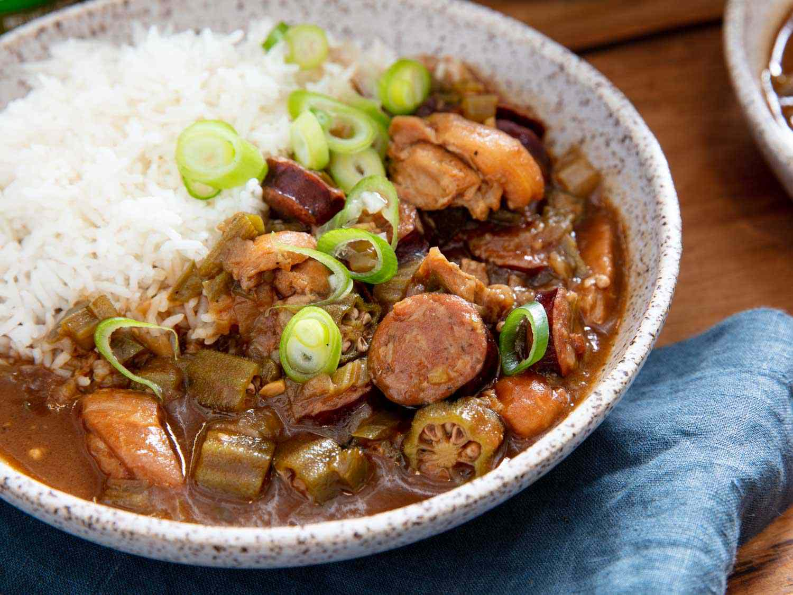

Gumbo Recipe

Descriptions
Gumbo is a soup popular in the US state of Louisiana.
On a trip to New Orleans,I got to taste this amazing dish and ever since has become one of my favorite.
The dish often eaten with rice and consists primarily of the Creole "holy trinity"(onion,bell pepper
and celery), garlic, okra, and dark roux,meat/seafood and . There are two main variations to this soup:
chicken and sausage,and seafood gumbo. No matter which, it can become your tasty and filling lunch or dinner.
Ingredients
- 1 Yellow onion
- 1 Bell pepper
- 3 Sticks of celery
- 10 cloves of garlic
- 10 Okras
- 6 Chicken thighs
- 1 Smoked sausage
- 1 lb Cooked shrimp
- 1 Cup of oil
- 1 Cup of flour
- Salt
- Pepper
Instructions
- Debone chicken thighs, season and cook the meat in oven for 30 mins
- Mince garlic and chop onion,belle pepper, and celery into 1/2 inch pieces
- Use the chicken bone and left over vegetable to make stock
- Cut sausage into coin shape
- Pour oil into the pot, wait until hot then put in flour
- Stir continuously to create roux until the color become dark chocolate
- Put vegetables and sausage into the pot
- Pour in 32oz of stock and simmer on low for 2.5 hours
- Cut up cooked chicken and set aside
- Chop the okra in 1/2 inch pieces
- Once 2.5 hours is up, add in the cooked chicken, shrimp and
okra and cook for an addition 30 mins
- Add salt and pepper to taste